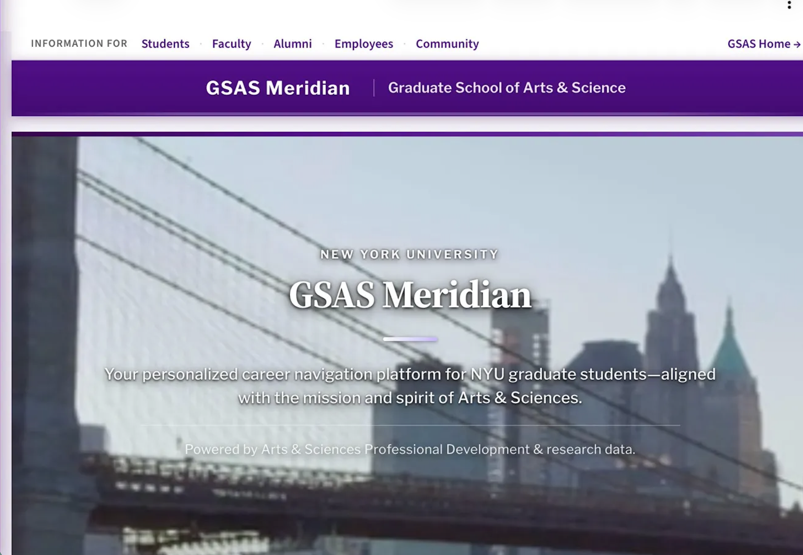
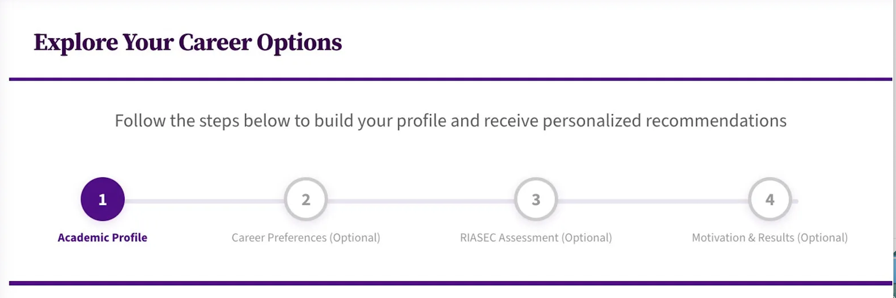
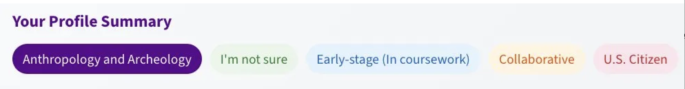

A career intelligence platform built on 75,000+ alumni records, deployed across NYU GSAS to deliver persona-based career guidance at scale.
Context
Career advising in graduate education does not scale. PhD programs enroll students whose career trajectories diverge dramatically across industry, government, nonprofit, and academia, but advising practice typically defaults to a one-size-fits-all model. Advisors spend hours per student on intake and assessment, leaving little time for the strategic coaching that actually shapes outcomes.
Meridian closes this gap. Students complete a tiered profile, the platform classifies them into one of four empirically-derived career personas, and outputs personalized recommendations grounded in the longitudinal trajectories of similar alumni. Deployed across NYU's Graduate School of Arts and Sciences, the platform serves 5,000+ active users and has reduced advising cycle time by 30%, allowing advisors to focus on coaching rather than diagnosis.

Approach
The student-facing flow uses progressive disclosure. Only the Academic Profile (field of study, program stage, work style, citizenship) is required. Three additional layers are optional: Career Preferences sharpens the role search; the RIASEC Assessment adds psychometric signal; Motivation and Results captures intrinsic and extrinsic drivers. This design reflects a practical reality. Students arrive at career advising in different states of self-knowledge, and a tool that demands thirty minutes of personality assessment before producing any output gets abandoned. Meridian generates a usable persona prediction at any completion level, with confidence increasing as more layers are filled in.

Persona assignment is anchored in a K-means clustering model trained on 75,000+ alumni records, with four validated personas emerging at a silhouette score of 0.37. New student profiles are classified using an XGBoost classifier (macro F1 = 0.58, accuracy = 0.60), benchmarked against Random Forest and logistic regression baselines. SHAP values surface the top features driving each prediction, so students see why they were classified as they were rather than receiving a black-box label. The model and explainer run on AWS, with a Streamlit front-end serving the student experience.
Impact
5,000+
Active student users across NYU GSAS
75,000+
Alumni records powering the model
30%
Reduction in advising cycle time

Explore the platform.
Open Meridian →